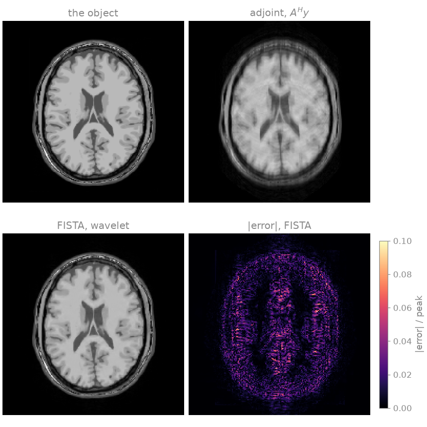
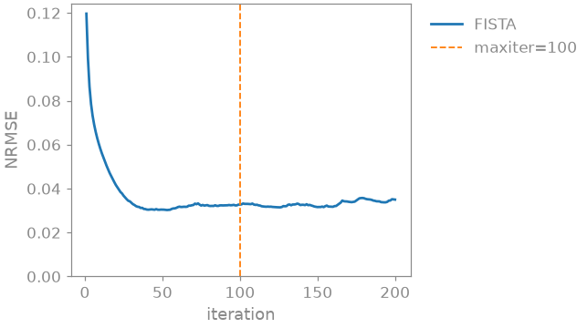

Note
Go to the end to download the full example code.
6. Custom encoding and solver#
In lesson 5 you handed pics the data, the maps and a penalty, and it did
the rest. In this lesson you assemble the same reconstruction from its
parts. You build the SENSE encoding operator, check its adjoint, run the
solver on it, and obtain exactly what pics returns, bit for bit. Then
you extend the operator with one written in Python, and differentiate
through it.
The mental model: bartorch.apps.pics() builds three objects and runs
BART’s iteration on them: the encoding operator \(A = PFS\)
(sensitivities, Fourier transform, sampling), the regularization terms of
bartorch.priors, and an iterative algorithm of bartorch.optim.
You need the parts whenever BART has no application for what you want to
do: an encoding with an extra factor, such as an off-resonance or motion
phase; a solver called from your own outer loop; an operator written in
Python; or a gradient with respect to the data, to train a network.
Learning objectives
Build
bartorch.linop.CartesianSenseand read the plan it was lowered into.Check an operator’s adjoint with the dot-product test.
Prepare the data as
picsdoes and reproducebartorch.apps.pics()bit for bit withbartorch.optim.FISTA.Compose operators, include one defined in Python, and differentiate through an application.
Previous: 5. Choosing a regularizer. Next: 7. Basics of non-Cartesian imaging, where you replace the FFT with a NUFFT and leave the Cartesian grid.
The encoding operator#
Your scan is the one of lesson 2 [1], with a tenth of its noise:
eight channels, kspace of shape (coils, 1, y, x) with one
phase-encoding line in three acquired around a 24-line ACS block. ESPIRiT
gives you the maps, as before.
bartorch.linop.CartesianSense is \(A = PFS\) as one operator.
You give it the sensitivities, the shape of the image, and the sampling
pattern; the shape of the k-space it maps to follows from those.
bartorch.tools.pattern() reads the pattern off the data, as you would
for a prospectively undersampled scan.
modulated=True selects the uncentred sample convention that BART’s
applications iterate in; the default is the centred convention of
bartorch.fft(). The two differ by a modulation of the samples and
give the same image. The choice matters only when you apply the operator to
data already in one of them, as you do below.
import torch
import bartorch
import bartorch.tools as bt
from bartorch import apps, linop, optim, priors
maps = bt.ecalib(kspace, maps=1, calib_size=CALIBRATION, crop=0.8)
pattern = bt.pattern(kspace)
A = linop.CartesianSense(
maps.squeeze(1),
(SIZE, SIZE),
pattern.squeeze(),
modulated=True,
)
print(f"{A.ishape} -> {A.oshape}")
print(A.plan)
print(f"fused: {A.plan.fused}")
(192, 192) -> (8, 192, 192)
Plan(transform=fft, image=sensitivities, normal=transform, coil_batch=1, streamed=coils, executor=slab)
fused: True
The operator maps an image of (y, x) to k-space of (coils, y, x).
A.plan reports how it is computed: which transform, what multiplies
the image and the samples, and how the normal operator \(A^H A\) is
applied. It is read back from the operator that was built, not predicted.
plan.fused is false where the composition could not be expressed as one
encoding and fell back to a chain, which gives the same numbers more slowly.
The adjoint#
A solver needs \(A^H\), not \(A^T\), and one built on the wrong one converges to the wrong image. You can check it with the definition, \(\langle Ax, y\rangle = \langle x, A^H y\rangle\), which holds for any pair of vectors, random ones included:
generator = torch.Generator().manual_seed(0)
probe = torch.randn(A.ishape, dtype=torch.complex64, generator=generator)
samples = torch.randn(A.oshape, dtype=torch.complex64, generator=generator)
forward = (A(probe).conj() * samples).sum()
adjoint = (probe.conj() * A.H(samples)).sum()
print(f"relative difference {abs(forward - adjoint) / abs(forward):.2e}")
relative difference 1.20e-07
The two inner products agree to single-precision round-off.
Solving#
A solver is called as solver(y, A). To get the answer pics gets,
you give it the data pics iterates on rather than the array the scanner
wrote: the sampling pattern applied, the modulation into the uncentred
convention, and the data divided by the scale
bartorch.optim.data_scaling() estimates.
measured = bartorch.fftmod(kspace * pattern, axes=(-1, -2, -3), inverse=True)
scale = optim.data_scaling(measured)
data = (measured / scale).squeeze(1)
term = priors.Wavelet(axes=(-1, -2), weight=0.002)
assembled = optim.FISTA(term, maxiter=100)(data, A) * scale
The solution is multiplied back by the scale, which puts the image into the
units of the k-space, as pics does unless given rescale=False.
Now run pics on the raw kspace with the same term and solver, and
compare:
tool = apps.pics(kspace, maps, regularizers=term, solver="fista", maxiter=100)
same = torch.equal(assembled.squeeze(), tool.squeeze())
print(f"identical to pics: {same}")
def nrmse(estimate):
return bt.nrmse(image.abs(), estimate.abs(), scaled=True)
print(f"NRMSE, adjoint {nrmse(A.H(data)):.3f}")
print(f"NRMSE, FISTA {nrmse(assembled):.3f}")

identical to pics: True
NRMSE, adjoint 0.119
NRMSE, FISTA 0.032
The two are the same iteration over the same operator, so they return the same bits, not merely close ones. In the figure, the adjoint \(A^H y\) is not the inverse: it is the sensitivity-weighted coil combination of the zero-filled k-space, and it carries the aliasing of the undersampling and the shading of \(\sum_c |S_c|^2\). The solve removes both, as the NRMSE printed above shows, and its remaining error sits at the tissue boundaries.
Operator algebra#
@ composes, + adds, A.H is the adjoint and A.gram() the
normal operator \(A^H A\). A composition builds one BART operator
rather than a Python chain, so a solver iterating on it does not return to
Python between applications. bartorch.optim.maxeigen() runs the power
iteration on an operator; the largest eigenvalue of \(A^H A\) is the
Lipschitz constant of the least-squares gradient, which bounds the
gradient step size.
print(f"largest eigenvalue of A^H A: {optim.maxeigen(A.gram()):.3f}")
largest eigenvalue of A^H A: 0.999
An operator of your own is composed with BART’s operators through
from_callbacks(): you give it the input
and output shapes, a forward and an adjoint, and BART calls them back. Here
it is a spatially varying phase, as an off-resonance or eddy-current phase
would be, placed between the image and the encoding:
field = torch.exp(1j * 0.4 * torch.pi * grid_x).to(torch.complex64)
phase = linop.LinearOperator.from_callbacks(
(SIZE, SIZE),
(SIZE, SIZE),
lambda u: field * u,
lambda u: field.conj() * u,
)
composed = A @ phase
print(f"{composed.ishape} -> {composed.oshape}, fused: {composed.plan.fused}")
(192, 192) -> (8, 192, 192), fused: True
composed has the same interface as A (forward, adjoint, normal
operator) and is passed to a solver in the same way.
Differentiation#
Apply an operator to a tensor that requires a gradient, and autograd records it. For \(y = Ax\) the gradient torch propagates back is \(A^H g\), not \(A^T g\), which is torch’s conjugate Wirtinger convention for complex tensors. A real \(A\) has \(A^H = A^T\), so only a complex check tells the two apart. Here the gradient of \(\|Ax - y\|^2\) at \(x = 0\) should be \(-2A^H y\):
variable = data.new_zeros(A.ishape).requires_grad_(True)
residual = A(variable) - data
(residual.abs() ** 2).sum().backward()
expected = 2 * A.H(-data)
difference = (variable.grad - expected).abs().max() / expected.abs().max()
print(f"relative difference from 2 A^H (Ax - y): {float(difference):.2e}")
relative difference from 2 A^H (Ax - y): 2.06e-07
Learned reconstruction describes the backward passes of the solvers, and Solvers which algorithm applies to which problem.
Exercise: FISTA convergence#
optim.FISTA is a loop over bartorch.optim.FISTABlock, one
iteration per call. Run the loop yourself for 200 iterations and record the
error of the image after each one:
block = optim.FISTABlock(term)
state = block.start(data, A)
trace = []
for _ in range(200):
state = block(state, A)
trace.append(nrmse(block.output(state, A)))

The error falls steeply over the first few tens of iterations, reaches its
minimum before iteration 50, and then stays close to that level with small
fluctuations up to iteration 200. For this data and weight, the 100
iterations used above are past the point where more iterations reduce the
error. Try step=0.5 in FISTABlock, or a larger
weight, and compare the curves.
As a spec#
What this lesson built, stated the way you would ask an agent for it:
With bartorch, build linop.CartesianSense from ESPIRiT maps, the image
shape and the sampling pattern of a 2D Cartesian 8-channel k-space
(modulated=True), print its plan, and check its adjoint with a random
dot-product test. Prepare the data as pics does (pattern, fftmod
inverse, divided by optim.data_scaling), solve with optim.FISTA and
priors.Wavelet over the last two axes (weight 0.002, 100 iterations),
and check torch.equal against apps.pics with the same term. Compose the
operator with a Python phase operator from from_callbacks, and check
that autograd's gradient of ||Ax - y||^2 at zero is -2 A^H y.
References#
Total running time of the script: (0 minutes 6.368 seconds)